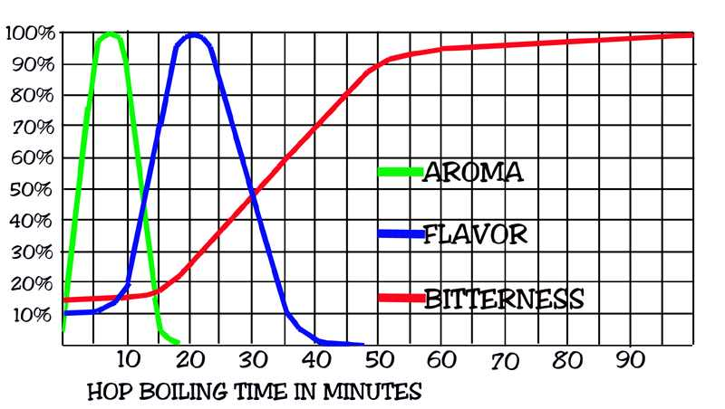

L’unité permettant de quantifier l’amertume est l’International Bitterness Unit (IBU). Selon certaines sources, le niveau d’absorption maximale est d’environ 125 IBU.
L’amertume est fonction de la quantité de houblon, de son acide alpha et du temps d’ébullition. Ainsi, on recommande d’utiliser un houblon avec une haute teneur en acide alpha afin de minimiser la quantité de dépôt. Puisque le houblon utilisé en amérisant n’ajoute que très peu d’arômes floraux, la sorte utilisée importe peu. Pour une bière contenant beaucoup de houblon, une gravité initiale assez haute est nécessaire afin d’obtenir un fini balancé. Le type des grains et le profil de l’eau ont tous deux un impact considérable sur la perception de l’amertume.
Il est important de faire la distinction entre le IBU calculé et le IBU réel. En effet, certains calculateurs ne prennent pas en considération l’amertume ajoutée par le houblon en fin d’ébullition. Toutefois, étant donné que le mout reste suffisamment longtemps à haute température pour qu’il y ait isomérisation des acides alpha, le IBU réel sera effectivement plus élevé.

Floral
Les arômes et saveurs floraux proviennent du houblon ajouté en fin d’ébullition et en fin de fermentation (Dry Hopping). Il est recommandé d’utiliser des houblons reconnus pour les arômes et saveurs avec peu d’acide alpha. Le temps recommandé pour le houblonnage à froid est de 3 à 7 jours. Il est à noter que plus la température sera élevée (20-24°C), plus il sera possible d’extraire des arômes. Ainsi, si votre cold crash s’effectue pendant trois jours, il serait intéressant de débuter le DH environ 7 jours avant l’embouteillage afin d’éviter d’avoir encore des matières en suspension et de tirer au maximum des saveurs disponibles. Les quantités de houblon lors du DH proposé par la littérature sont entre 2 et 10 g/L. À 5 g/L le résultat est excellent et la facture demeure raisonnable. Plusieurs dry hop sont très populaires, notamment 50% Amarillo et 50% Simcoe, ou encore 100% cascade.
{kind=link}